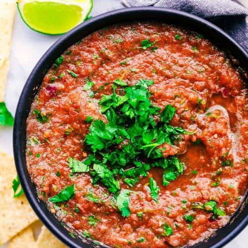

Melissa's Salsa

Description
This salsa recipe is a family favorite due to how quick and easy it is. Melissa's salsa has a restaurant style
consistency and is on the mild end of spiciness.
Ingredients
- 1 can original Rotel
- 2 cans diced tomatoes w/ green chilies
- 1 tablespoon minced garlic
- 1 teaspoon salt
- 3-4 green onions
- 1 nickel size of cilantro by stem
Steps
- Add Rotel, diced tomatoes w/ green chilies, garlic, salt, onions, and cilantro in the blender
- Blend ingredients until salsa is at preferred consistency